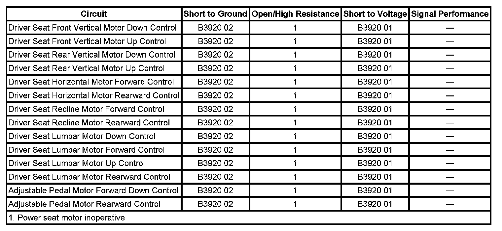

B3920
DTC B3920 or B3921
DTC DESCRIPTOR
DTC B3920 01
Group 1 Seat Motors Circuit Shorted to Battery or Open
DTC B3920 02
Group 1 Seat Motors Circuit Shorted to Ground
DIAGNOSTIC FAULT INFORMATION

Perform the Diagnostic System Check - Vehicle prior to using this diagnostic procedure. Initial Inspection and Diagnostic Overview
CIRCUIT/SYSTEM DESCRIPTION
The memory seat module (MSM) controls the seat, lumbar, and adjustable pedal motors via half bridges that are connected to a common power rail internal to the module. Group 1 includes the following motors:
- Seat front vertical motor
- Seat rear vertical motor
- Seat horizontal motor
- Seat recline motor
- Seat lumbar horizontal motor
- Seat lumbar vertical motor
- Adjustable pedal motor
When a power seat switch is pressed or when a memory recall is requested, each seat or lumbar motor receives battery voltage and ground from the MSM via the motor control circuits. All seat and lumbar motors are reversible, so the direction the seat moves depends on which control circuit voltage is applied and which control circuit the ground is applied. For example, to move the seat in the forward direction, the module applies voltage to the seat horizontal motor forward control circuit, and ground to the seat horizontal motor rearward control circuit. When the seat is operated in the opposite direction, the module reverses the polarity and applies voltage and ground to the opposite circuits to move the seat in the rearward direction. All seat and lumbar motors are powered this way.
CONDITIONS FOR RUNNING THE DTC
The MSM must be powered.
CONDITIONS FOR SETTING THE DTC
B3920 01
The MSM detects a short to battery voltage on a group 1 motor control circuit.
B3920 02
The MSM detects a short to ground on a group 1 motor control circuit.
ACTION TAKEN WHEN THE DTC SETS
The MSM disables all motors in the group for which the DTC was set.
CONDITIONS FOR CLEARING THE DTC
- The current DTC clears when the malfunction is no longer present, and the power mode changes to OFF then back to ACC or RUN
- A history DTC will clear after 50 ignition cycles or with a scan tool using the clear DTCs function.
CIRCUIT/SYSTEM TESTING
1. Ignition OFF, disconnect the C1 harness connector at the MSM.
2. Ignition ON, verify that a test does not illuminate between any of the following motor control circuits and ground:
- Front vertical motor terminal 12
- Front vertical motor terminal 13
- Rear vertical motor terminal 15
- Rear vertical motor terminal 16
- Seat horizontal motor terminal 9
- Seat horizontal motor terminal 10
- If the test lamp illuminates, test the control circuit for a short to voltage.
3. Test for infinite resistance between the following motor control circuits and ground:
- Front vertical motor terminal 12
- Front vertical motor terminal 13
- Rear vertical motor terminal 15
- Rear vertical motor terminal 16
- Seat horizontal motor terminal 9
- Seat horizontal motor terminal 10
- If less than infinite resistance, test the motor control circuit for a short to ground.
4. Test for greater resistance values than specified between the following motor control circuits:
- 1 ohm for front vertical motor terminal 12 and terminal 13
- 1 ohm for rear vertical motor terminal 15 and terminal 16
- 10 ohms for seat horizontal motor terminal 9 and terminal 10
- If less than the specified resistance, test the control circuits for a short together or shorted motor.
5. Ignition OFF, disconnect the C4 harness connector at the MSM.
6. Ignition ON, verify that a test does not illuminate between any of the following motor control circuits and ground:
- Lumbar vertical motor terminal 1
- Lumbar vertical motor terminal 2
- Lumbar horizontal motor terminal 12
- Lumbar horizontal motor terminal 13
- Seat recline motor terminal 15
- Seat recline motor terminal 16
- Adjustable pedal motor terminal 9
- Adjustable pedal motor terminal 10
- If the test lamp illuminates, test the control circuit for a short to voltage.
7. Test for infinite resistance between the following motor control circuits and ground:
- Lumbar vertical motor terminal 1
- Lumbar vertical motor terminal 2
- Lumbar horizontal motor terminal 12
- Lumbar horizontal motor terminal 13
- Seat recline motor terminal 15
- Seat recline motor terminal 16
- Adjustable pedal motor terminal 9
- Adjustable pedal motor terminal 10
- If less than infinite resistance, test the motor control circuit for a short to ground.
8. Test for greater resistance values than specified between the following motor control circuits:
- 10 ohms for lumbar horizontal motor terminal 12 and terminal 13
- 1 ohm for recline motor terminal 15 and terminal 16
- If less than the specified resistance, test the control circuits for a short together or shorted motor.
9. If all circuits test normal, replace the MSM.
REPAIR INSTRUCTIONS
Perform the Diagnostic Repair Verification after completing the diagnostic procedure.
- Front Seat Adjuster Replacement (Power)
- Front Seat Recliner Actuator Motor Replacement
- Front Seat Lumbar Support Replacement (Power)
- Brake Pedal Assembly Replacement
- Control Module References for the memory seat module replacement, programming and setup Verification Tests Programming and Relearning